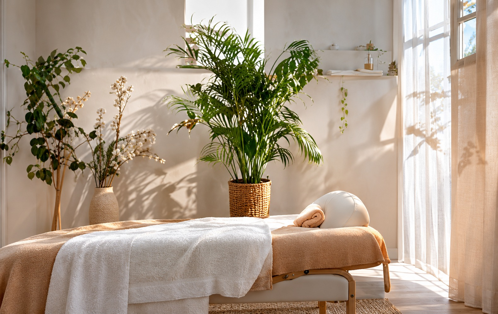
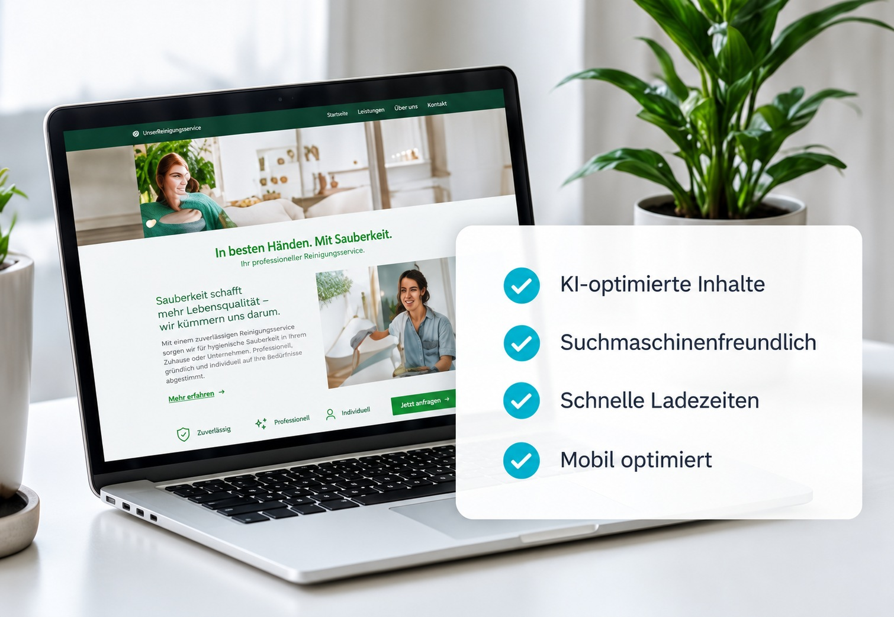
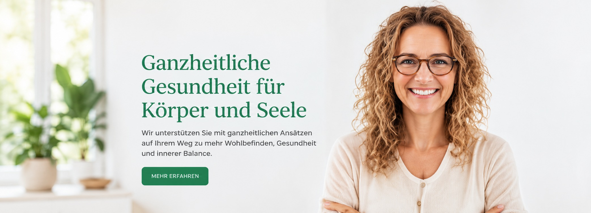

Für Arztpraxen
Stellen Sie Leistungen, Team und Patienteninformationen klar dar – damit Besucher:innen schnell finden, was sie benötigen.
Mehr erfahren →Websites für Praxen und Gesundheitsberufe
Wir entwickeln klare, moderne Websites für Praxen und Fachkräfte im Gesundheitsbereich – auf Patient:innen und Klient:innen ausgerichtet, für Google optimiert und für KI-gestützte Suche strukturiert.

WEBSITES FÜR IHREN BEREICH
Ihre Website ist oft der erste Eindruck Ihrer Praxis. Sie sollte Ihre Leistungen klar erklären, professionell wirken und den nächsten Schritt so einfach wie möglich machen.
Stellen Sie Leistungen, Team und Patienteninformationen klar dar – damit Besucher:innen schnell finden, was sie benötigen.
Mehr erfahren →Schaffen Sie einen ruhigen, professionellen ersten Eindruck, der Ihren Ansatz verständlich erklärt und die Kontaktaufnahme erleichtert.
Mehr erfahren →
Präsentieren Sie Ihre Leistungen und Ihre Philosophie klar – persönlich, glaubwürdig und einfach zu navigieren.
Mehr erfahren →Machen Sie Ihr Angebot, Ihre Zielgruppe und Ihre Arbeitsweise leicht verständlich – ohne Ihren persönlichen Stil zu verlieren.
Mehr erfahren →
KI-OPTIMIERTE WEBSITES
Die Suche verändert sich. Wir strukturieren Ihre Website so, dass Besucher:innen, Google und KI-gestützte Suchsysteme schnell verstehen, was Sie anbieten, wem Sie helfen und wo Sie tätig sind.
Das bedeutet klare Inhalte, eine logische Struktur und sinnvolle technische Signale – und nicht einfach nur das Wort „KI“ auf Ihrer Website.
Das Ziel ist einfach: Ihre Praxis heute leichter verständlich zu machen und Ihre Website auf die Art vorzubereiten, wie Menschen morgen suchen.
Mehr über KI-Optimierung erfahren →WARUM SEITENPRAXIS
Ihre Website sollte zu Ihrer Praxis passen – nicht zu einer beliebigen Vorlage. Sie soll Ihre Arbeit authentisch widerspiegeln, klar kommunizieren und Besucher:innen das Vertrauen geben, den nächsten Schritt zu gehen.
SICHTBARKEIT IN DER SUCHE
Wir kümmern uns um die wichtigsten technischen und inhaltlichen Grundlagen, damit Suchmaschinen Ihre Website verstehen können – während Sie sich auf Ihre Praxis konzentrieren.
Mehr über unseren SEO-Ansatz erfahren →ABLAUF
Sie wissen jederzeit, was als Nächstes passiert, was wir von Ihnen benötigen und wann Ihr Feedback gefragt ist.
Ziele, Zielgruppe, Leistungen und Prioritäten.
Seitenstruktur, inhaltliche Ausrichtung und visuelles Konzept.
Eine responsive Website, die auf Ihre Praxis zugeschnitten ist.
Abgestimmte Anpassungen, finale Qualitätschecks und Veröffentlichung.
Wartung, Aktualisierungen und Weiterentwicklung nach Bedarf.
ZUSAMMENARBEIT & BETREUUNG
Wir kommunizieren klar, erklären Entscheidungen verständlich und gestalten Feedback unkompliziert – damit das Projekt von Anfang bis Ende strukturiert und transparent bleibt.
Sie wissen, was passiert, warum es wichtig ist und was als Nächstes kommt.
Fokussierte Feedbackrunden ohne technische Komplexität.
Auch nach dem Go-live lassen wir Sie nicht allein.
UNSERE ARBEIT
Entdecken Sie Websites für unterschiedliche Leistungen, Zielgruppen und Arbeitsweisen – jeweils professionell, klar und individuell gestaltet.
Unsere Projekte ansehen →
KUNDENSTIMMEN
Klare Kommunikation, persönliche Betreuung und ein passgenaues Ergebnis – erfahren Sie, wie Kund:innen die Zusammenarbeit mit Seitenpraxis erleben.
IHR NÄCHSTER SCHRITT
Sagen Sie uns, was Sie verbessern möchten. Wir schauen uns Ihre Ziele an, beantworten Ihre Fragen und empfehlen Ihnen einen klaren nächsten Schritt – kostenlos und unverbindlich.